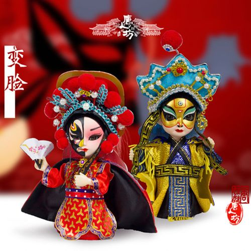

Copyright @ 2024
邵阳工业职业技术学院移动应用开发专业 mobile
application development

历史起源
变脸之于川剧，有如喷火之于秦腔，皆属招牌路数、看家绝技！说起变脸，有必要先到川剧那里去溯一溯源。 话说清乾隆、嘉庆年间，每至逢年过节之际，在四川乡镇村落码头处林立的庙堂都会搭起戏台以作庆典，久而久之， 川剧就在街头巷尾之中渐成气候。清代“两湖填四川”，为蜀地的文化带来了诸多新元素，昆、高、胡、弹、灯， 诸腔戏班汇入巴蜀各大城中的酒肆街坊之中，生、旦、净、末、丑同亮相于茶馆的小戏台之上， 日久逐渐形成共同的风格，清末时统称“川戏”，后才改称“川剧”。
川剧变脸
川剧绝活：变脸
变脸是运用在川剧艺术中塑造人物的一种特技。是揭示剧中人物内心思想感情的一种浪漫主义手法。
变脸的手法大体上分为三种：“抹脸”、“吹脸”、“扯脸”。
抹脸：是指将化妆油彩涂在脸的某一特定部位上，到时用手往脸上一抹，就可以变成另一种颜色。
吹脸：适合于粉末状的化妆品，如金粉、墨粉、银粉等。表演者在舞台上的某个小盒子内装上粉末，贴近盒子一吹，粉末扑在脸上，立即变成另一种颜色的脸。
扯脸：是比较复杂的一种变脸方法。它是事先将脸谱画在一张一张的绸子上，每张脸谱上都系一把丝线，再一张一张地贴在脸上，丝线则系在衣服的某一个顺手而又不引人注目的地方。随着剧情的进展，在舞蹈动作的掩护下一张一张地将它扯下来。
演出信息
天府艺术公园·蜀园4月21日（星期日）川剧折子戏演出
重庆市川剧院2024年4月20日（周六）演出信息
成都悦来茶园4月20日（星期六）川剧折子戏演出
2024年4月20日郫都区振兴川剧团演出信息
2024年4月19日成都市百家班川剧团演出信息
2024年4月19日郫都区振兴川剧团演出信息